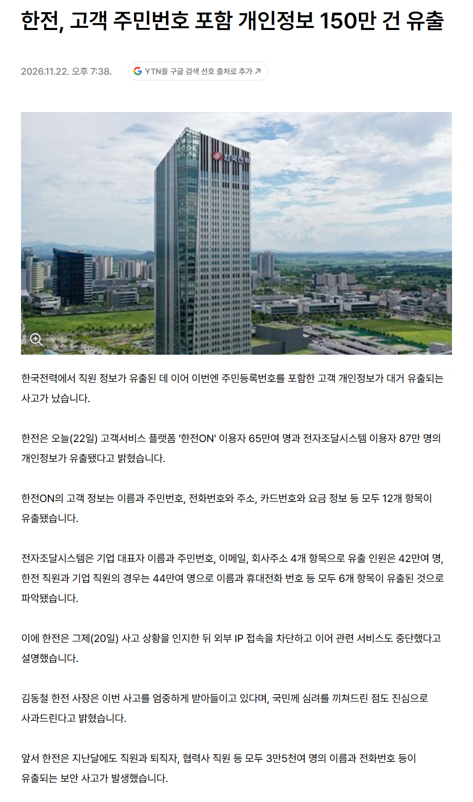
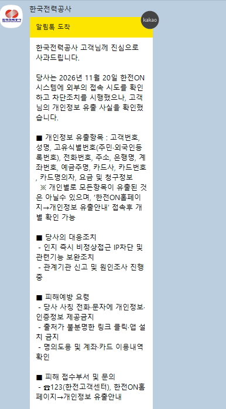

아까 보니까 나한테도 날아옴


아까 보니까 나한테도 날아옴
공기업은 벌금 얼마나 때리냐
맨날 직원들한테 보안훈련하더만, 정보 털리고 ’피해 발생시 회사에서 법률 지원하겠다(=피해사실 증빙할 수 있을 때나 도와주겠다)고 내부 메일로 기싸움하던데
고객 상대로도 그럴 수 있나 보자ㅋㅋㅋ
지금 여기저기서 개인 정보 유출됐다고 오는데, 심각하네
대기업들이 몇천만명 단위로 터트려서 150만명은 그나마 다행인 편
개인정보를 다 갖다 바쳐야 뭘 할수있게 만들자너 ㅋㅋㅋ
한전 적자라더니
아주 ㅅㅂ 시민둘 개인정보가 공공재여
옛날엔 좆되는거 아닌가 했는데
하도 많이 털려서 그런가보다 생각함